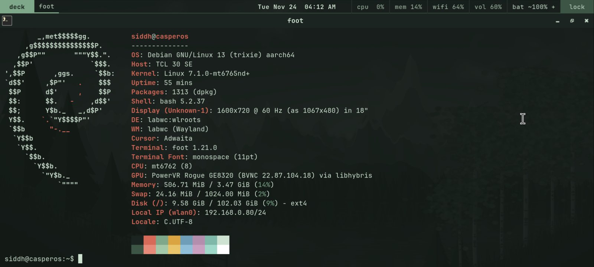
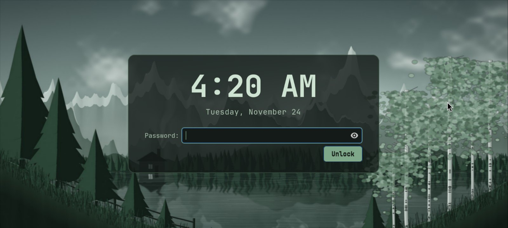

The goal
The TCL 30 SE is a cheap phone built on the MediaTek MT6765 (Helio P35) with 4 GB of RAM. Phones like this usually die with whatever Android they shipped with. I wanted a real Linux computer instead: a normal Debian install, a desktop I could dock to a keyboard, and enough hardware working that it's actually usable, as the core of a 3D-printed cyberdeck.
Booting a mainline kernel
The phone runs Debian 13 (trixie) on Linux 7.1, starting from a community MT6765 kernel fork and adding the TCL-specific pieces: the device tree for this board, the FocalTech touchscreen, audio, power keys, charging, and a port of MediaTek's Wi-Fi stack. It boots from the phone's second slot with the root filesystem on the old user-data partition, so the original Android slot stays intact as a fallback.
The GPU: Android driver, Linux desktop
The PowerVR Rogue GE8320 has no open-source driver that supports it. The working route is libhybris: the phone's own Android GPU driver is loaded inside a normal Linux process. That gets you a GPU, but not a picture on a Linux desktop, so I wrote a small EGL "platform" plugin that takes each frame the GPU finishes and hands it to the Wayland compositor. Firefox now renders pages on the GPU with WebRender.
Hardware video decoding
The chip has a dedicated H.264 decoder, but on Android it's only reachable through MediaTek's libraries. A small kernel module exposes it on Linux, and a pipeline feeds the compressed video in and raw frames out to mpv, with the audio decoded alongside. YouTube links clicked in Firefox hand off to it automatically. Measured: 1080p at 30 fps and 720p at 60 fps, smooth.
Docking: USB host, charging, and hot-swap
For a cyberdeck the phone has to act as a USB host for a keyboard and mouse, and ideally charge at the same time. Two problems got in the way. The phone's USB controller jams if you switch its role back and forth, so the role is now set once at boot from a saved setting (with a small menu to change it). And the USB-C chip's driver kept flipping the port back to "device" mode every time a dock was unplugged, which is what made hot-swapping impossible. A small kernel change lets userspace hold the role, and now docks can be unplugged and replugged while the phone runs, charging included through a dock's PD port.
The cyberdeck desktop

The desktop is labwc (a light Wayland compositor) with waybar, a keyboard launcher, a terminal, notifications, a lock screen, a battery estimate (the phone has no fuel gauge, so it's read from the cell voltage), and a power-button menu. It idles at about 440 MiB of RAM. An XFCE session and my own touch-first shell, PocketShell, are there too.
What's not done
The compositor still draws in software, so the acceleration is partial. Real sleep works and the screen now survives it, but the power button can't wake the phone yet and USB host doesn't come back afterwards. Bluetooth, the cellular modem and the camera aren't working, and HDMI over USB-C isn't possible on this hardware.
How it was built
I built this with Claude Code as an AI pair-programmer. It worked over SSH on the phone and my laptop, writing and debugging the kernel and driver changes, the EGL plugin, and the desktop setup. I handled the hardware: unlocking and flashing, testing every change on the real phone, plugging docks in and out, and deciding what to build next. The code is open source: the project, the kernel, and PocketShell.